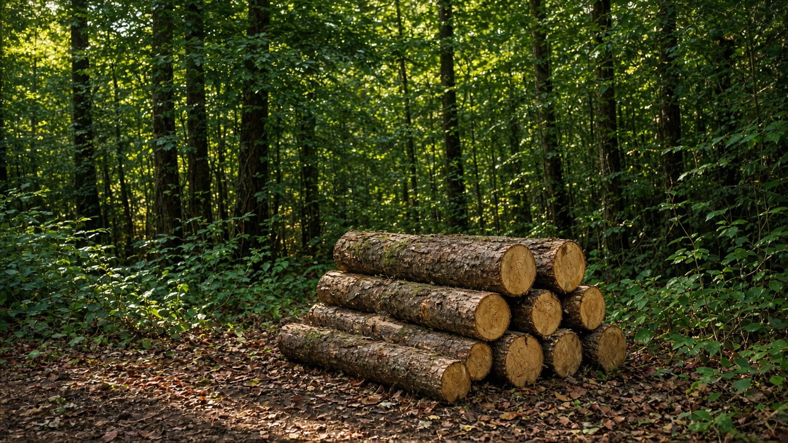
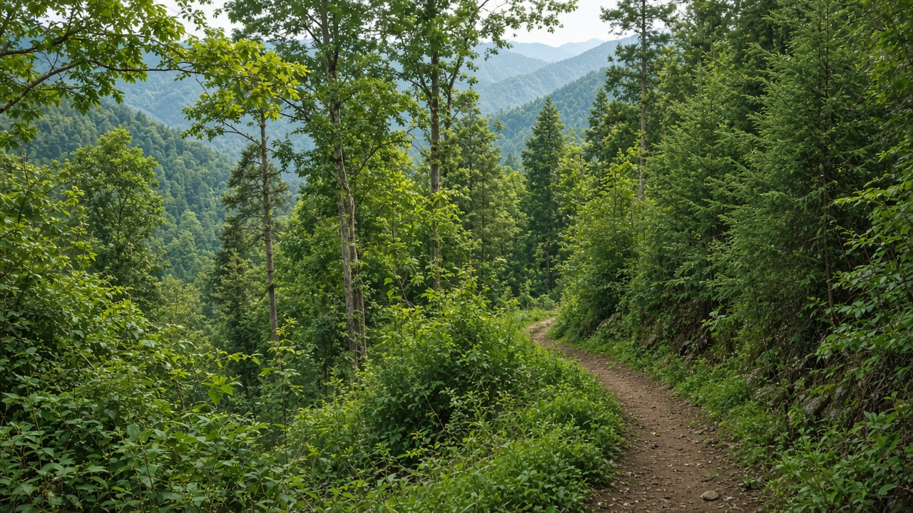

Sustainable Forest Management and Certification
Published on August 20, 2026
Sustainable forest management aims to harvest wood and other products at rates the stand can replace, while keeping soils, water, regeneration, and local livelihoods intact across rotations. It is a planning discipline: inventories, growth models, and compartment maps set annual allowable cut, road density, and rest periods rather than cutting wherever a tree is accessible. Criteria and indicators typically cover forest resources, biological diversity of the stand, health, productive functions, protective functions, socioeconomic benefits, and legal frameworks. Practices include retaining seed trees and dead wood, matching species to site, limiting skid-trail compaction, and monitoring regeneration after harvest. Without this cycle of plan–harvest–check, “sustainable” becomes a slogan attached to any logging that leaves a few stems standing.
Certification is a third-party audit that a forest management unit and its chain of custody meet published standards, so buyers can distinguish wood from operations that document legality, workers’ conditions, and ecological safeguards. Schemes differ in how they treat smallholders, indigenous tenure, and plantation versus natural forest, and audits can miss problems if field time is short. Certification does not replace public law; it adds a market signal and a checklist that can raise the floor where enforcement is weak. Costs of inventory, roads built to standard, and annual audits can exclude the smallest user groups unless group certification or stepwise approaches are used. Traceability from stump to mill remains the weak link when informal fuelwood and mixed roadside lots enter the same market as labeled timber.
Making management and certification useful on the ground means scaling tools to community forests and small private woods, not only industrial concessions. Simple growth plots, harvest registers, and participatory maps can meet many indicators if they are kept honestly. In Nepal, operational plans of community forest user groups already encode allowable cut, species protection, and benefit sharing; linking those plans to national criteria and, where markets exist, to group certificates can improve prices without importing a one-size audit. Buyers and public procurement that reward documented origin close the loop. Education should teach students that a certificate is evidence of a process—inventory, limits, monitoring—not a green stamp that excuses overcutting or conversion hidden behind a plantation label.

दिगो वन व्यवस्थापनले स्ट्यान्डले प्रतिस्थापन गर्न सक्ने दरमा काठ र अन्य उत्पादन कटान गर्ने लक्ष्य राख्छ, चक्रभरि माटो, पानी, पुनरुत्पादन र स्थानीय जीविकोपार्जन अक्षुण्ण राख्दै। यो योजना अनुशासन हो: सूची, वृद्धि मोडेल र कम्पार्टमेन्ट नक्शाले वार्षिक स्वीकार्य कटान, सडक घनत्व र विश्राम अवधि तोक्छन्, रूख पुग्ने ठाउँमा काट्नु होइन। मापदण्ड र सूचक प्रायः वन स्रोत, स्ट्यान्डको जैविक विविधता, स्वास्थ्य, उत्पादक कार्य, रक्षात्मक कार्य, सामाजिक-आर्थिक लाभ र कानुनी ढाँचा समेट्छन्। अभ्यासमा बीउ रूख र मृत काठ राख्ने, प्रजाति स्थलसँग मिलाउने, स्किड गोरेटो दबाब सीमित गर्ने र कटानपछि पुनरुत्पादन निगरानी पर्छन्। योजना–कटान–जाँच चक्रविना “दिगो” केही काण्ड उभ्याएर छाड्ने जुनसुकै कटानमा टाँसिने नारा बन्छ।
प्रमाणीकरण तेस्रो पक्षको लेखा परीक्षण हो कि वन व्यवस्थापन एकाइ र यसको अभिरक्षा शृङ्खलाले प्रकाशित मापदण्ड पूरा गर्छ, ताकि खरिदकर्ताले वैधता, श्रमिक अवस्था र पारिस्थितिक सुरक्षा कागजात गर्ने कार्यबाट काठ छुट्याउन सकून्। योजना साना किसान, आदिवासी स्वामित्व र वृक्षारोपण बनाम प्राकृतिक वनमा फरक व्यवहार गर्छन्, र क्षेत्र समय छोटो भए लेखा परीक्षणले समस्या छुटाउन सक्छ। प्रमाणीकरण सार्वजनिक कानुनको विकल्प होइन; यसले बजार संकेत र चेकलिस्ट थप्छ जसले प्रवर्तन कमजोर ठाउँमा तल्ला उठाउन सक्छ। सूची, मापदण्डअनुसार सडक र वार्षिक लेखा परीक्षणका लागतले समूह प्रमाणीकरण वा चरणबद्ध उपाय नभए सबैभन्दा साना उपभोक्ता समूह बाहिर पार्न सक्छन्। ठुटाबाट मिलसम्म पत्ता लगाइ कमजोर कडी रहन्छ जब अनौपचारिक दाउरा र मिश्रित सडक किनारा लट लेबल भएको काठसँगै बजारमा पस्छन्।
व्यवस्थापन र प्रमाणीकरण मैदानमा उपयोगी बनाउनु भनेको औजार औद्योगिक छुटमा मात्र होइन सामुदायिक वन र साना निजी वनमा स्केल गर्नु हो। सरल वृद्धि प्लट, कटान रजिस्टर र सहभागी नक्शा इमानदारीपूर्वक राखिए धेरै सूचक पूरा गर्न सक्छन्। नेपालमा सामुदायिक वन उपभोक्ता समूहका सञ्चालन योजनाले पहिले नै स्वीकार्य कटान, प्रजाति सुरक्षा र लाभ बाँडफाँड सङ्केत गर्छन्; ती योजनालाई राष्ट्रिय मापदण्ड र, बजार भएका ठाउँमा, समूह प्रमाणपत्रसँग जोड्दा एकनास लेखा परीक्षण आयात नगरी मूल्य सुधार्न सकिन्छ। कागजात भएको उत्पत्ति पुरस्कृत गर्ने खरिदकर्ता र सार्वजनिक खरिदले लूप बन्द गर्छन्। शिक्षाले विद्यार्थीलाई प्रमाणपत्र प्रक्रियाको प्रमाण हो—सूची, सीमा, निगरानी—भन्नुपर्छ, वृक्षारोपण लेबल पछाडि लुकेको अधिक कटान वा रूपान्तरण माफ गर्ने हरियो छाप होइन।

सतत वन प्रबंधन स्टैंड द्वारा बदले जा सकने दर पर काष्ठ और अन्य उत्पाद काटने का लक्ष्य रखता है, चक्र भर मिट्टी, जल, पुनरुत्पादन और स्थानीय आजीविका अक्षुण्ण रखते हुए। यह योजना अनुशासन है: सूची, वृद्धि मॉडल और कक्ष नक्शे वार्षिक स्वीकार्य कटाई, सड़क घनत्व और विश्राम अवधि तय करते हैं, वृक्ष पहुँच योग्य स्थान पर काटना नहीं। मानदंड और संकेतक प्रायः वन संसाधन, स्टैंड की जैव विविधता, स्वास्थ्य, उत्पादक कार्य, रक्षात्मक कार्य, सामाजिक-आर्थिक लाभ और कानूनी ढाँचा समेटते हैं। अभ्यास में बीज वृक्ष और मृत काष्ठ रखना, प्रजाति स्थल से मिलाना, स्किड पगडंडी दबाव सीमित करना और कटाई के बाद पुनरुत्पादन निगरानी आते हैं। योजना–कटाई–जाँच चक्र के बिना “सतत” कुछ तने खड़े छोड़ने वाली किसी भी कटाई पर चिपका नारा बन जाता है।
प्रमाणीकरण तृतीय पक्ष लेखा परीक्षा है कि वन प्रबंधन इकाई और उसकी अभिरक्षा शृंखला प्रकाशित मानकों को पूरा करती है, ताकि खरीदार वैधता, श्रमिक दशा और पारिस्थितिक सुरक्षा दस्तावेज़ करने वाले कार्य से काष्ठ अलग कर सकें। योजनाएँ छोटे किसानों, आदिवासी स्वामित्व और वृक्षारोपण बनाम प्राकृतिक वन के साथ भिन्न व्यवहार करती हैं, और क्षेत्र समय छोटा हो तो लेखा परीक्षा समस्याएँ छोड़ सकती है। प्रमाणीकरण सार्वजनिक कानून का विकल्प नहीं; यह बाज़ार संकेत और चेकलिस्ट जोड़ता है जो प्रवर्तन कमज़ोर स्थान पर फ़र्श उठा सकता है। सूची, मानक अनुसार सड़कें और वार्षिक लेखा परीक्षा की लागत समूह प्रमाणीकरण या चरणबद्ध उपाय न हों तो सबसे छोटे उपभोक्ता समूह बाहर कर सकती है। ठूँठ से मिल तक पता लगाना कमज़ोर कड़ी रहता है जब अनौपचारिक ईंधन काष्ठ और मिश्रित सड़क किनारा लॉट लेबल काष्ठ के साथ बाज़ार में घुसते हैं।
प्रबंधन और प्रमाणीकरण ज़मीन पर उपयोगी बनाना औजार औद्योगिक रियायत तक नहीं सामुदायिक वन और छोटे निजी वनों तक स्केल करना है। सरल वृद्धि प्लॉट, कटाई रजिस्टर और सहभागी नक्शे ईमानदारी से रखे जाएँ तो कई संकेतक पूरे कर सकते हैं। नेपाल में सामुदायिक वन उपभोक्ता समूहों की संचालन योजनाएँ पहले से स्वीकार्य कटाई, प्रजाति सुरक्षा और लाभ बाँट संकेत करती हैं; उन योजनाओं को राष्ट्रीय मानदंड और, जहाँ बाज़ार हों, समूह प्रमाणपत्र से जोड़ने पर एक-आकार लेखा परीक्षा आयात किए बिना मूल्य सुधर सकते हैं। दस्तावेज़ीकृत उत्पत्ति पुरस्कृत करने वाले खरीदार और सार्वजनिक खरीद लूप बंद करते हैं। शिक्षा छात्रों को सिखाए कि प्रमाणपत्र प्रक्रिया का प्रमाण है—सूची, सीमाएँ, निगरानी—वृक्षारोपण लेबल के पीछे छिपी अति कटाई या रूपांतरण माफ़ करने वाली हरित मुहर नहीं।